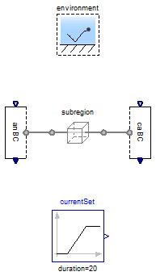

Table of Contents
- User's Guide
- Blocks
- Conditions
- Assemblies
- Regions
- Subregions
- Phases
- Species
- Chemistry
- Connectors
- Characteristics
- Units
- Quantities
- Utilities
- Icons
Download
- Latest: v0.1.1
FCSys.Subregions.Examples.Reactions
Examples of phase changeInformation
Extends from Modelica.Icons.ExamplesPackage (Icon for packages containing runnable examples).Package Content
| Name | Description |
|---|---|
| Test the hydrogen oxidation reaction in one subregion | |
| Test the oxygen reduction reaction in one subregion |
 FCSys.Subregions.Examples.Reactions.HOR
FCSys.Subregions.Examples.Reactions.HOR
Test the hydrogen oxidation reaction in one subregion

Information
Extends from Examples.Subregion (Single subregion, with H2 by default).
Parameters
| Type | Name | Default | Description |
|---|---|---|---|
| Species | |||
| Boolean | 'inclC+' | true | Carbon plus (C+) |
| Boolean | 'inclSO3-' | true | Nafion sulfonate (C19HF37O5S-, abbreviated as SO3-) |
| Boolean | 'incle-' | true | Electrons (e-) |
| Boolean | 'inclH+' | true | Protons (H+) |
| Boolean | inclH2 | true | Hydrogen (H2) |
| Boolean | inclH2O | false | Water vapor (H2O) |
| Boolean | inclN2 | false | Nitrogen (N2) |
| Boolean | inclO2 | false | Oxygen (O2) |
Modelica definition
model HOR "Test the hydrogen oxidation reaction in one subregion" output Q.Potential h0=0.5*Characteristics.H2.Gas.Deltah0_f + 0.25* Characteristics.O2.Gas.Deltah0_f - 0.5*Characteristics.H2O.Gas.Deltah0_f; output Q.Potential w=subregion.graphite.'e-Transfer'.Deltag "Overpotential"; output Q.Current zI=subregion.graphite.'e-Transfer'.I "Reaction rate"; output Q.Number J_Apercm2=zI*U.cm^2/(subregion.A[Axis.x]*U.A) "Electrical current density of the reaction, in A/cm2"; output Q.Power Qdot=-subregion.graphite.'e-Transfer'.inert.Qdot "Rate of heat generation due to reaction"; extends Examples.Subregion( 'inclC+'=true, 'inclSO3-'=true, 'incle-'=true, 'inclH+'=true, inclH2=true, subregion(L={0.287*U.mm,10*U.cm,10*U.cm}), environment(T=333.15*U.K, RH=0.8)); Conditions.ByConnector.BoundaryBus.Single.Sink anBC(graphite( 'incle-'=true, 'inclC+'=true, redeclare Conditions.ByConnector.ThermalDiffusive.Single.Temperature 'C+' (set(y=environment.T)), 'e-'(redeclare function materialSpec = Conditions.ByConnector.Boundary.Single.Material.current, materialSet(y=currentSet.y))), gas(inclH2=true, H2( materialSet(y=environment.p_dry), redeclare function thermalSpec = Conditions.ByConnector.Boundary.Single.Thermal.temperature, thermalSet(y=environment.T)))); Conditions.ByConnector.BoundaryBus.Single.Sink caBC(ionomer('inclH+'=true, 'H+'(redeclare function materialSpec = Conditions.ByConnector.Boundary.Single.Material.potential (redeclare package Data = FCSys.Characteristics.'H+'.Ionomer), materialSet(y=0)))); Modelica.Blocks.Sources.Ramp currentSet( height=200*U.A, duration=20, startTime=5); equation connect(subregion.xPositive, caBC.boundary); connect(anBC.boundary, subregion.xNegative); end HOR;
FCSys.Subregions.Examples.Reactions.ORR
Test the oxygen reduction reaction in one subregion
Information
Extends from Examples.Subregion (Single subregion, with H2 by default).
Parameters
| Type | Name | Default | Description |
|---|---|---|---|
| Species | |||
| Boolean | 'inclC+' | true | Carbon plus (C+) |
| Boolean | 'inclSO3-' | true | Nafion sulfonate (C19HF37O5S-, abbreviated as SO3-) |
| Boolean | 'incle-' | true | Electrons (e-) |
| Boolean | 'inclH+' | true | Protons (H+) |
| Boolean | inclH2 | false | Hydrogen (H2) |
| Boolean | inclH2O | true | Water vapor (H2O) |
| Boolean | inclN2 | false | Nitrogen (N2) |
| Boolean | inclO2 | true | Oxygen (O2) |
Modelica definition
model ORR "Test the oxygen reduction reaction in one subregion" output Q.Potential w=-subregion.graphite.'e-Transfer'.Deltag "Overpotential"; output Q.Current zI=-subregion.graphite.'e-Transfer'.I "Reaction rate"; output Q.Number J_Apercm2=zI*U.cm^2/(subregion.A[Axis.x]*U.A) "Electrical current density, in A/cm2"; output Q.Power Qdot=-subregion.graphite.'e-Transfer'.inert.Qdot "Rate of heat generation due to reaction"; extends Examples.Subregion( 'inclC+'=true, 'inclSO3-'=true, 'incle-'=true, 'inclH+'=true, inclH2=false, inclH2O=true, inclO2=true, subregion(L={0.287*U.mm,10*U.cm,10*U.cm}, gas(O2(initEnergy=Init.none))), environment(T=333.15*U.K, RH=0.6)); Conditions.ByConnector.BoundaryBus.Single.Source anBC(ionomer('inclH+'=true, 'H+'( thermalSet(y=environment.T), materialSet(y=0), redeclare function materialSpec = Conditions.ByConnector.Boundary.Single.Material.potential (redeclare package Data = FCSys.Characteristics.'H+'.Ionomer)))); Conditions.ByConnector.BoundaryBus.Single.Source caBC(gas( inclH2O=true, inclO2=true, H2O( redeclare function materialSpec = Conditions.ByConnector.Boundary.Single.Material.pressure, materialSet(y=environment.p_H2O), thermalSet(y=environment.T)), O2( redeclare function materialSpec = Conditions.ByConnector.Boundary.Single.Material.pressure, materialSet(y=environment.p_O2), thermalSet(y=environment.T))), graphite( 'incle-'=true, 'e-'(materialSet(y=currentSet.y), thermalSet(y=environment.T)), 'inclC+'=true, 'C+'(set(y=environment.T)))); Modelica.Blocks.Sources.Ramp currentSet( duration=20, height=-200*U.A, startTime=5); // offset=-U.mA, equation connect(subregion.xPositive, caBC.boundary); connect(anBC.boundary, subregion.xNegative); end ORR;